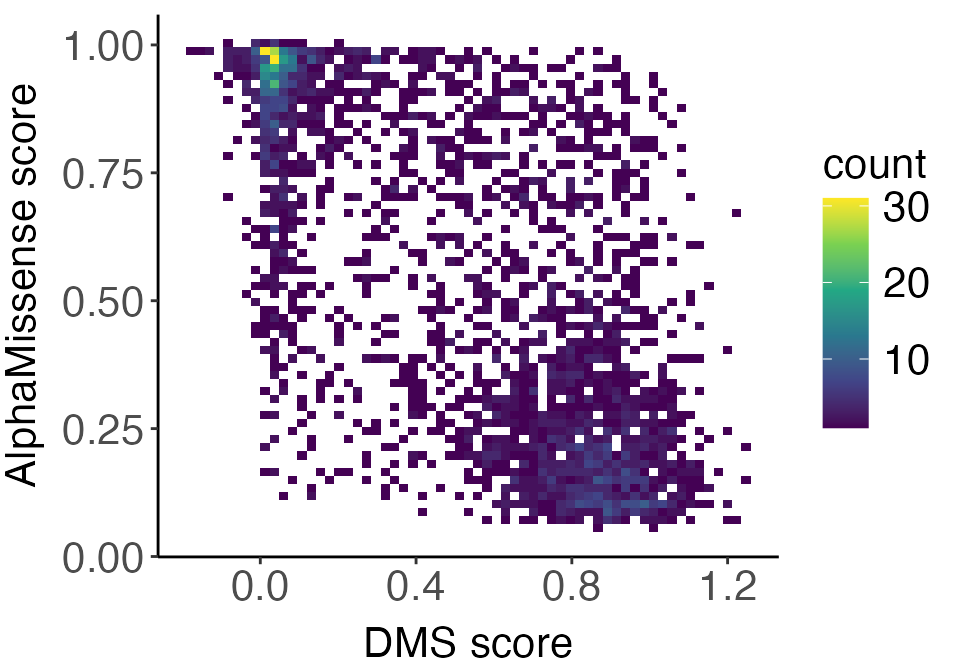
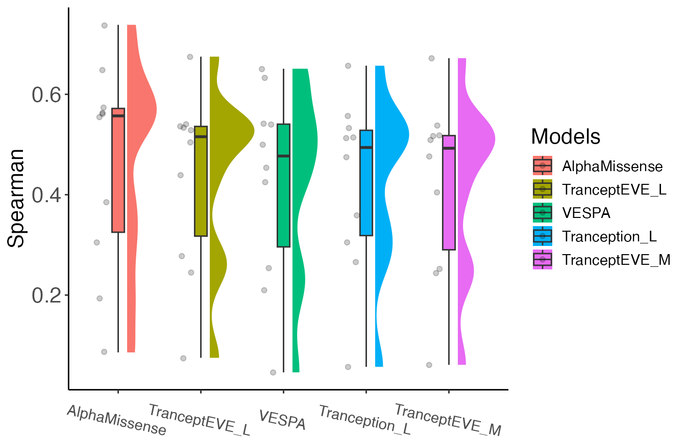

Original version: 8 October, 2024
library(AlphaMissenseR)
library(ExperimentHub)
library(dplyr)
library(tidyr)
library(ggdist)
library(gghalves)
library(ggplot2)Introduction
Benchmarking is essential for assessing different variant effect prediction approaches, potentially aiding in decisions about which models are most suitable for specific research questions or clinical applications.
To evaluate the performance of AlphaMissense and its predictions, we integrate with the ProteinGym database, a comprehensive collection of benchmarks aimed at comparing the ability of models that predict the effects of protein mutations. It consists of an extensive dataset of deep mutational scanning (DMS) assays covering approximately 2.7 million missense variants across 217 experiments, as well as annotated human clinical variants for 2,525 proteins. DMS assays are highly valuable as they systematically test all possible single mutations in a protein, recording their fitness effects. They can reveal the impacts of both deleterious and beneficial mutations on fitness, offering insights into protein structure and activity.
Furthermore, ProteinGym provides several standardized model evaluation metric scores (“AUC”, “MCC”, “NDCG”, “Spearman”, “Top_recall”) for 62 models calculated across the 217 DMS assays, offering a consistent and extensive benchmarking framework across approaches.
This vignette demonstrates how to 1) compare AlphaMissense predictions to DMS scores on a per-protein basis, and 2) how to benchmark AlphaMissense against other models aimed at predicting protein mutation effects.
Access ProteinGym datasets through ExperimentHub.
The ProteinGym DMS assays can be accessed by querying
ExperimentHub.
eh <- ExperimentHub::ExperimentHub()
dms_data <- eh[['EH9555']]
#> ProteinGymR not installed.
#> Full functionality, documentation, and loading of data might not be possible without installing
#> loading from cache
head(names(dms_data))
#> [1] "A0A140D2T1_ZIKV_Sourisseau_2019" "A0A192B1T2_9HIV1_Haddox_2018"
#> [3] "A0A1I9GEU1_NEIME_Kennouche_2019" "A0A247D711_LISMN_Stadelmann_2021"
#> [5] "A0A2Z5U3Z0_9INFA_Doud_2016" "A0A2Z5U3Z0_9INFA_Wu_2014"Each element of the list is an individual DMS assay with the following information for each column: the UniProt protein identifier, the DMS experiment assay identifier, the mutant at a given protein position, the mutated protein sequence, the recorded DMS score, and a binary DMS score bin categorizing whether the mutation has high (1) or low fitness (0). For more details, reference the publication from Notin et al. 2023.
A supplementary table of AlphaMissense pathogencity scores for ~1.6 M
substitutions matching those in the ProteinGym DMS assays is provided by
Cheng et al. 2023, and
can also be accessed through ExperimentHub.
am_scores <- eh[['EH9554']]
#> ProteinGymR not installed.
#> Full functionality, documentation, and loading of data might not be possible without installing
#> loading from cache
am_scores |> head()
#> DMS_id Uniprot_ID variant_id
#> 1 A0A140D2T1_ZIKV_Sourisseau_growth_2019 A0A140D2T1_ZIKV I291A
#> 2 A0A140D2T1_ZIKV_Sourisseau_growth_2019 A0A140D2T1_ZIKV I291Y
#> 3 A0A140D2T1_ZIKV_Sourisseau_growth_2019 A0A140D2T1_ZIKV I291W
#> 4 A0A140D2T1_ZIKV_Sourisseau_growth_2019 A0A140D2T1_ZIKV I291V
#> 5 A0A140D2T1_ZIKV_Sourisseau_growth_2019 A0A140D2T1_ZIKV I291T
#> 6 A0A140D2T1_ZIKV_Sourisseau_growth_2019 A0A140D2T1_ZIKV I291S
#> AlphaMissense
#> 1 0.9124037
#> 2 0.8899629
#> 3 0.9694002
#> 4 0.2470229
#> 5 0.8939576
#> 6 0.8617630The data.frame shows the DMS_id matching a
ProteinGym assay, the UniProt entry name of the protein evaluated, the
mutation and position, and the aggregated AlphaMissense score for that
mutation. For more details about the table, reference the AlphaMissense
paper.
Correlate DMS scores and AlphaMissense predictions
The DMS scores serve as an experimental measure to compare the accuracy of AlphaMissense mutation effect predictions. For a given protein, we can plot the relationship between the two measures and report their Spearman correlation.
Here, we demonstrate using the “NUD15_HUMAN” assay. First, we filter both datasets to the chosen assay.
NUD15_dms <- dms_data[["NUD15_HUMAN_Suiter_2020"]]
NUD15_am <- am_scores |>
filter(DMS_id == "NUD15_HUMAN_Suiter_2020")Wrangle and merge the DMS and AlphaMissense tables together by the UniProt and mutant identifers.
NUD15_am <- NUD15_am |>
mutate(Uniprot_ID = "Q9NV35")
merged_table <-
left_join(
NUD15_am, NUD15_dms,
by = c("Uniprot_ID" = "UniProt_id", "variant_id" = "mutant"),
relationship = "many-to-many"
) |>
select(Uniprot_ID, variant_id, AlphaMissense, DMS_score) |>
na.omit()Now, we plot the correlation.
correlation_plot <-
merged_table |>
ggplot(
aes(y = .data$AlphaMissense, x = .data$DMS_score)
) +
geom_bin2d(bins = 60) +
scale_fill_continuous(type = "viridis") +
xlab("DMS score") +
ylab("AlphaMissense score") +
theme_classic() +
theme(
axis.text.x = element_text(size = 16),
axis.text.y = element_text(size = 16),
axis.title.y = element_text(size = 16, vjust = 2),
axis.title.x = element_text(size = 16, vjust = 0),
legend.title = element_text(size = 16),
legend.text = element_text(size = 16)
)
correlation_plot
If mutating a residue resulted in reduced fitness in the DMS assay (low DMS score), we would expect it to be predicted as pathogenic (higher AlphaMissense score). Therefore, a stronger negative correlation represents a tighter relationship between the two measures. We can see this with the NUD15 protein.
We can also print the Spearman correlation.
cor.test(
merged_table$AlphaMissense, merged_table$DMS_score,
method="spearman",
exact = FALSE
)
#>
#> Spearman's rank correlation rho
#>
#> data: merged_table$AlphaMissense and merged_table$DMS_score
#> S = 6440239302, p-value < 2.2e-16
#> alternative hypothesis: true rho is not equal to 0
#> sample estimates:
#> rho
#> -0.6798269The correlation is r = -0.67 and is statistically significant.
Benchmark AlphaMissense with other variant effect prediction models
We can calculate the Spearman correlation across multiple DMS assays
in which we have corresponding AlphaMissense scores, and use this metric
to benchmark across multiple models aimed at predicting mutation
effects. For this analysis, we will load in the metric scores for 62
models calculated across the 217 DMS assays from the ProteinGym database
available through ExperimentHub.
metrics_scores <- eh[['EH9593']]
#> ProteinGymR not installed.
#> Full functionality, documentation, and loading of data might not be possible without installing
#> loading from cachemetrics_scores is a list object where each
element is a data.frame corresponding to one of five model
evaluation metrics (“AUC”, “MCC”, “NDCG”, “Spearman”, “Top_recall”)
available from ProteinGym. Briefly, these metrics were calculated on the
DMS assays for 62 models in a zero-shot setting. The Protein
Gym paper provides more information about these metrics.
To demonstrate, we will benchmarking using the Spearman correlation calculated on 10 DMS assays for 5 models. The following code subsets and merges the relevant datasets.
chosen_assays <- c(
"A0A1I9GEU1_NEIME_Kennouche_2019",
"A0A192B1T2_9HIV1_Haddox_2018",
"ADRB2_HUMAN_Jones_2020",
"BRCA1_HUMAN_Findlay_2018",
"CALM1_HUMAN_Weile_2017",
"GAL4_YEAST_Kitzman_2015",
"Q59976_STRSQ_Romero_2015",
"UBC9_HUMAN_Weile_2017",
"TPK1_HUMAN_Weile_2017",
"YAP1_HUMAN_Araya_2012")
am_subset <-
am_scores |>
filter(DMS_id %in% chosen_assays)
dms_subset <-
dms_data[names(dms_data) %in% chosen_assays]
dms_subset <-
bind_rows(dms_subset) |>
as.data.frame()
metric_subset <-
metrics_scores[["Spearman"]] |>
filter(DMS_ID %in% chosen_assays) |>
select(-c(Number_of_Mutants, Selection_Type, UniProt_ID,
MSA_Neff_L_category, Taxon))
merge_am_dms <-
left_join(
am_subset, dms_subset,
by = c("DMS_id" = "DMS_id", "variant_id" = "mutant"),
relationship = "many-to-many"
) |>
na.omit()The Spearman scores are already provided for the 62 models in the ProteinGym metrics table, but we will need to calculate this for AlphaMissense.
spearman_res <-
merge_am_dms |>
group_by(DMS_id) |>
summarize(
AlphaMissense = cor(AlphaMissense, DMS_score, method = "spearman")
) |>
mutate(
AlphaMissense = abs(AlphaMissense)
)
DMS_IDs <- metric_subset |> pull(DMS_ID)
metric_subset <-
metric_subset |>
select(-DMS_ID) |>
abs() |>
mutate(DMS_id = DMS_IDs)
all_sp <-
left_join(
metric_subset, spearman_res,
by = "DMS_id"
)all_sp is a table of Spearman correlation values
(absolute values to handle difference in directionality of certain DMS
assays) across the ProteinGym and AlphaMissense models for the 10
assays.
Prepare the data for plotting.
res_long <-
all_sp |>
select(-DMS_id) |>
tidyr::pivot_longer(
cols = everything(),
names_to = "model",
values_to = "score"
) |>
group_by(model) |>
mutate(
model_mean = mean(score)
) |>
mutate(
model = as.factor(model)
) |>
ungroup()
unique_ordered_models <- unique(res_long$model[order(res_long$model_mean,
decreasing = TRUE)])
res_long$model <- factor(res_long$model,
levels = unique_ordered_models)
topmodels <- levels(res_long$model)[1:5]
top_spearmans <-
res_long |>
filter(model %in% topmodels) |>
droplevels()Visualize with a raincloud plot.
top_spearmans |>
ggplot(
aes(x = model, y = score, fill = model, group = model)
) +
ggdist::stat_halfeye(
adjust = .5,
width = .6,
.width = 0,
justification = -.2,
point_colour = NA
) +
geom_boxplot(
width = .15,
outlier.shape = NA
) +
gghalves::geom_half_point(
side = "l",
range_scale = .4,
alpha = .2
) +
coord_cartesian(clip = "off") +
scale_fill_discrete(name = "Models") +
theme_classic() +
ylab("Spearman") +
theme(
axis.text.x = element_text(size = 11, angle = -12),
axis.text.y = element_text(size = 16),
axis.title.y = element_text(size = 16),
axis.title.x = element_blank(),
legend.title = element_text(size = 16),
legend.text = element_text(size = 11)
)
Based on the Spearman correlation for the 10 assays we chose, AlphaMissense performed the best. For a realistic and comprehensive benchmark, one would want to apply this framework across all 217 DMS assays available in ProteinGym.
Session information
sessionInfo()
#> R Under development (unstable) (2024-07-31 r86945)
#> Platform: aarch64-apple-darwin23.4.0
#> Running under: macOS Sonoma 14.6.1
#>
#> Matrix products: default
#> BLAS: /Users/mtmorgan/bin/R-devel/lib/libRblas.dylib
#> LAPACK: /Users/mtmorgan/bin/R-devel/lib/libRlapack.dylib; LAPACK version 3.12.0
#>
#> locale:
#> [1] en_US.UTF-8/en_US.UTF-8/en_US.UTF-8/C/en_US.UTF-8/en_US.UTF-8
#>
#> time zone: America/New_York
#> tzcode source: internal
#>
#> attached base packages:
#> [1] stats graphics grDevices utils datasets methods base
#>
#> other attached packages:
#> [1] gghalves_0.1.4 ggplot2_3.5.1 ggdist_3.3.2
#> [4] tidyr_1.3.1 ExperimentHub_2.13.1 AnnotationHub_3.13.3
#> [7] BiocFileCache_2.13.2 dbplyr_2.5.0 BiocGenerics_0.51.0
#> [10] AlphaMissenseR_1.1.7 dplyr_1.1.4
#>
#> loaded via a namespace (and not attached):
#> [1] tidyselect_1.2.1 viridisLite_0.4.2 farver_2.1.2
#> [4] blob_1.2.4 filelock_1.0.3 Biostrings_2.73.1
#> [7] fastmap_1.2.0 duckdb_1.1.0 digest_0.6.37
#> [10] mime_0.12 lifecycle_1.0.4 KEGGREST_1.45.1
#> [13] RSQLite_2.3.7 magrittr_2.0.3 compiler_4.5.0
#> [16] rlang_1.1.4 sass_0.4.9 tools_4.5.0
#> [19] utf8_1.2.4 yaml_2.3.10 knitr_1.48
#> [22] labeling_0.4.3 htmlwidgets_1.6.4 bit_4.5.0
#> [25] spdl_0.0.5 curl_5.2.3 withr_3.0.1
#> [28] purrr_1.0.2 desc_1.4.3 grid_4.5.0
#> [31] stats4_4.5.0 fansi_1.0.6 colorspace_2.1-1
#> [34] scales_1.3.0 cli_3.6.3 rmarkdown_2.28
#> [37] crayon_1.5.3 ragg_1.3.2 generics_0.1.3
#> [40] httr_1.4.7 BiocBaseUtils_1.7.3 DBI_1.2.3
#> [43] cachem_1.1.0 zlibbioc_1.51.1 AnnotationDbi_1.67.0
#> [46] BiocManager_1.30.23 XVector_0.45.0 vctrs_0.6.5
#> [49] jsonlite_1.8.9 IRanges_2.39.2 S4Vectors_0.43.2
#> [52] bit64_4.5.2 systemfonts_1.1.0 jquerylib_0.1.4
#> [55] glue_1.8.0 pkgdown_2.1.0 distributional_0.5.0
#> [58] gtable_0.3.5 BiocVersion_3.20.0 GenomeInfoDb_1.41.1
#> [61] UCSC.utils_1.1.0 munsell_0.5.1 tibble_3.2.1
#> [64] pillar_1.9.0 rappdirs_0.3.3 htmltools_0.5.8.1
#> [67] GenomeInfoDbData_1.2.12 R6_2.5.1 textshaping_0.4.0
#> [70] evaluate_0.24.0 Biobase_2.65.1 highr_0.11
#> [73] png_0.1-8 memoise_2.0.1 bslib_0.8.0
#> [76] RcppSpdlog_0.0.18 rjsoncons_1.3.1 Rcpp_1.0.13
#> [79] whisker_0.4.1 xfun_0.47 fs_1.6.4
#> [82] pkgconfig_2.0.3